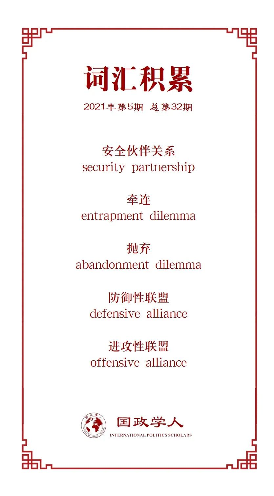

收录于合集

作品简介
【作者】 Renato Cruz De Castro，马尼拉德拉萨尔大学国际研究系的杰出大学教授，并担任菲美关系的Aurelio Calderon博士主席。作为阿尔伯特·德尔·罗萨里奥战略与国际研究所（ADRI）董事会成员，他每月为《菲律宾之星》和《商界》撰写评论专栏。
【编译】 孟晓宇（国政学人编译员，山东大学东北亚学院硕士）
【校对】 杨朔 孙唯一
【审核】 晋玉
【排版】 秦子宁
【美编 】游钜家
【来源】 De Castro, Renato Cruz. “Abstract of crisis in Philippine-US security relations: from an alliance to a security partnership?.” The Pacific Review (2020): 1-29.
【归档】 《国际关系前沿》2021年第5期，总第32期。
期刊简介
《太平洋评论》（ The Pacific Review ）是太平洋地区研究的主要平台，作为跨学科期刊，其宗旨和目标为打破研究领域之间以及学术界、新闻界、政府和商界之间的壁垒，重点关注政策问题。根据Journal Citation Reports显示，2019年该刊的影响因子为1.633，在区域研究类SSCI期刊中排名11/77，在国际关系类SSCI期刊中排名第35/95。
菲美安全关系危机摘要：
从联盟到安全伙伴关系？ ****
Abstract of crisis in Philippine-US security relations: from an alliance to a security partnership?
Renato Cruz De Castro
内容提要
01
文章导读
本文探讨了将菲美同盟转变为安全伙伴关系的前景。从过去菲律宾怀疑美国一再软化援助其盟友的承诺，到2020年菲律宾总统罗德里戈·杜特尔特(Rodrigo Duterte)想要废除1997年菲美《访问部队协议》(VFA)，菲美联盟危机已然出现。为了避免整体安全关系的破裂，菲美两国或许可以探讨将同盟降级为安全伙伴关系的可能性。但如果菲律宾考虑这一选择，它必须考虑以下因素：
1、与世界上最强大的国家签订的防务条约失去威慑作用的后果；
2、对菲律宾国防开支的影响；
3、对正在进行的菲律宾武装部队现代化计划的影响；
4、菲律宾国内是否会支持这一举措。
02
引言
历史上，菲律宾参议院一直对菲美同盟持谨慎和批评态度。从害怕被美国抛弃到怀疑菲美联盟、害怕被菲美联盟牵连，以至于到2020年杜特尔特欲坚决废除VFA。鉴于菲美安全关系出现的危机，本文探讨了菲美联盟的另一种可能——安全伙伴关系，并由此引发了以下问题：
1、安全伙伴关系是取代菲美同盟的可行选择吗？
2、联盟和安全伙伴关系有什么不同？
3、菲美联盟面临着什么问题？
4、盟国是如何解决问题的？
5、导致菲美联盟最近发生危机的原因是什么？
6、将菲美从联盟转变为安全或战略伙伴关系的代价和好处是什么？
03
联盟VS安全伙伴关系
联盟是两个或两个以上主权国家之间正式或非正式的安全合作形式(Walt，1987)，其旨在增强每个成员国的权力、安全/影响力。尽管联盟千差万别，但一个有意义的联盟的基本要素是承诺相互支持，以对抗某些外部行为者(Walt，2009)。就义务而言，联盟承担以下角色：
a)在盟友受到攻击时提供帮助(防御性联盟)；
b)在攻击中协助盟友(进攻性对抗)；
c)置身冲突之外(中立契约)；
d)仅仅就一个问题咨询盟友(协约)(Wright & Rider，2014)。
联盟与硬平衡联系在一起，因为它们的形成通常是为了影响整体力量平衡，并寻求组建一个足够强大的制衡联盟，以遏制主导力量 (Walt，2009)。
但是加入联盟容易失去政策自主权(Johnson，2015)，因此为规避这一弊端，一些国家会选择安全伙伴关系。安全伙伴关系缺乏联盟的最基本要素——承诺相互支持，以对抗某些外部行为者。作为国家间合作的一种形式，安全伙伴关系与软平衡联系在一起，其不是利用军事力量或进行联合军事行动，而是结合和使用外交手段来保护其成员的利益。
04
菲美同盟
菲美同盟是以美国为中心的亚洲中心辐射制同盟的一部分。菲律宾和美国间密切的历史联系始于美国对该群岛的殖民统治，源于二战期间和之后广泛的军事合作历史，共同的战略和经济利益，共同的民主价值观，持久的文化亲和力，以及密切的人民关系(Lum & Dolven，2014)。
1992年之前，菲美安全关系主要是通过几项双边防务安排维持的。菲美在1951年签署《共同防务条约》（MDT）时结为正式的条约盟友。1954年，他们还成为东南亚条约组织(SEATO)的成员国。在这些双边防御安排中最重要的是1947年的菲美《军事基地协定》，在该协定中，菲律宾接受了美国在其领土上的主要海军和空军设施。1992年美军撤出阿富汗后，这两个盟国保持了MDT的完好无损，以此作为其双边安全合作的基础，但MDT没有明确规定美国有义务保卫有争议的菲律宾海域，留下了可以有不同解释的灰色地带(Lum & Dolven，2014)。
菲美联盟通过菲律宾和美国国防部和武装部队的行动保持活跃，主要包括：
1、召开菲美共同防务委员会年度会议；
2、成立安全保证委员会(SEB)，以解决与恐怖主义、跨国犯罪、海上安保和安全以及自然灾害和人为灾害等有关但不限于的非传统安全关切；
3、联合军事演习；
4、联合特遣部队菲律宾分队(JSOT-P)临时部署在菲律宾南部的棉兰老岛；
5、从2010年开始举行一年一度的双边战略对话。
05
被遗弃的恐惧
当中菲处于海洋争端中时，菲律宾曾一度存在着被盟友抛弃的恐惧，不断寻求美菲同盟的强化。例如：2011年6月，在菲律宾与中国领土争端最严重的时候，上届阿基诺政府积极寻求美国外交支持和军事援助，强调如果南沙争端成为一个军事问题，菲律宾可以援引1951年的MDT(McIndoe，2011)。
2012年菲律宾与中国在黄岩岛发生了紧张对峙后，菲律宾前总统阿基诺要求得到美国明确的安全保障。不仅如此，从2013年8月到2014年3月，马尼拉和华盛顿就支持美国转向亚洲战略的“增加轮换存在框架协议”进行了合作。菲律宾将允许美军在菲律宾驻扎更长时间，并预先在菲律宾军事基地部署他们的装备(Whaley，2013)，共同开展高影响力和高价值的演习。
2014年4月28日，美菲签署了MDT的更新版——菲美加强防务合作协议（EDCA）。EDCA促进了美国军队和装备的轮换部署，是菲律宾和美国发展个人和集体(防御)能力的框架。
06
从害怕被遗弃到怀疑
杜特尔特总统执政后将经济发展作为首要考虑，并怀疑美国是否会在与中国发生任何军事对抗的情况下直接履行其对菲律宾的国防保证，因此他要求降低菲美安全安排的级别，优先考虑中菲经济关系。
2016年9月12日，杜特尔特总统宣布，美国特种作战部队(SOF)必须结束在棉兰老岛的非战斗行动，并立即离开。在2016年9月底，杜特尔特总统表示他将寻求并与中国和俄罗斯结成“新联盟”。2017年初，杜特尔特威胁要单方面废除2014年的EDCA。2017年3月下旬，杜特尔特抨击华盛顿下令美国第七舰队在南中国海执行航行自由行动(FONOPs)。一家日本智库观察警告称“菲律宾新政府正在努力迅速重新评估其与美国传统上的密切关系，特别是在安全方面，将推动更加多样化的合作关系”(国家防卫研究所，2017)。
07
从怀疑到害怕被牵连
2018年5月16日，杜特尔特总统签署了菲律宾1946年独立以来的首份国家安全战略。国家安全局对菲律宾的外部环境警告说：当前的地区安全环境对菲律宾来说变得愈加不确定和危险。南海和太平洋大国之间的地缘战略竞争，以及国际秩序从单极向多极的转变要求菲律宾在一个日益多极化的体系中规划自己的角色，而且要有充分的装备和可信的防御能力来威慑潜在的侵略者，保护群岛不受国际恐怖分子、流行病、跨国犯罪和自然灾害的影响。
由此，菲律宾国家安全局呼吁菲律宾采取更微妙和灵活的方式与该地区的大国打交道，暗示其不会卷入中美在争议海域的任何军事争端（Sutter & Huang，2018）。为了避免被中美对抗所牵连，菲律宾甚至认为重新讨论MDT的时机已经到来(马尼拉公报，2018年)。
08
美菲同盟在2020年的危机
自2018年年中以来，杜特尔特政府一直对菲美联盟持非常怀疑的态度，并寻求独立的外交政策。他反对菲律宾军队在没有与中国进行类似接触的情况下与美国进行军事演习和其他交流的积极议程(Aurelio，2020)，对菲律宾被困在中美南海武装冲突(SIU，2019年)之间感到担忧。当菲律宾军队和美国军队在南中国海举行以中国为假想敌的2019巴利卡坦战斗场景时，他对大国战争的恐惧进一步加剧。
09
未来四年中美关系的确定性
自2018年年中以来，杜特尔特政府一直对菲美联盟持非常怀疑的态度，并寻求独立的外交政策。他反对菲律宾军队在没有与中国进行类似接触的情况下与美国进行军事演习和其他交流的积极议程(Aurelio，2020)，对菲律宾被困在中美南海武装冲突(SIU，2019年)之间感到担忧。当菲律宾军队和美国军队在南中国海举行以中国为假想敌的2019巴利卡坦战斗场景时，他对大国战争的恐惧进一步加剧。
10
从同盟到安全伙伴关系
VFA的废除在菲律宾和美国的联盟中造成了一场深刻的危机。这场危机实际上始于奥巴马政府对中国的再平衡政策，当时两个盟友都担心因为联盟承诺而陷入一场不必要的战争。由于担心陷入困境，美国在中菲黄岩岛对峙期间避免公开站在菲律宾一边，选择依靠温和的外交手段来缓解僵局。然而，华盛顿的被动态度侵蚀了美国对菲律宾防务承诺的可信度。由此，杜特尔特总统在2016年断言，尽管有69年的MDT历史，但美国不会基于菲律宾声称拥有主权的一些南海地物来保卫菲律宾军队。
相比之下，美国已经宣布有义务为日本在东海保卫尖阁诸岛(Simon，2017b)，而菲律宾亦担心卷入这一争端。在决定废除VFA之前，杜特尔特并不认为菲美同盟是南海争端的稳定因素，相反，他认为菲美同盟是可能在东亚引发重大冲突的导火索。
鉴于此，美菲同盟可以建立一种松散的联盟形式——安全伙伴关系。即使没有正式条约，安全伙伴仍然可以定期参加安全会议和磋商、联合演习和其他有限的防务相关活动。例如，美越安全伙伴关系于2011年9月19日正式确立，两国开展了海上安全能力建设、两军高层对话和磋商、搜救联合演习等行动。此外，日本和澳大利亚也达成了一种 “特殊的战略伙伴关系”(Wilkins，2015)。
11
安全伙伴关系是可行的替代品吗?
简而言之，与正式联盟相比，安全伙伴关系并不约束一个伙伴在武装冲突期间帮助另一个伙伴的行为。将菲美联盟降级为安全伙伴关系将意味着暂停或废除MDT，美国将不再是菲律宾唯一的正式条约盟友，而是成为与菲律宾签署防务合作协议的39个国家之一（Malaya & Mendoza Oblena，2016）。
菲律宾可以采取平衡的方式与这些大国打交道，从而与它们保持稳定和友好的关系。然而，菲美安全伙伴关系将产生以下后果：丧失与唯一的超级大国建立正式条约联盟所产生的威慑作用；增加菲律宾国防预算的压力；破坏菲律宾正在进行的军队现代化；将联盟降级为安全伙伴关系将得到菲律宾民众的冷淡支持。以上国内和国际双重压力的汇聚迫使杜特尔特总统暂停了对VFA的终止。
12
结论
美菲同盟关系的恶化可能会迫使两国将其联盟降级为安全伙伴关系。菲律宾和美国仍然可通过安全伙伴关系，在没有正式防务条约的情况下，继续参加定期军事会议和磋商、联合演习以及其他有限的防务相关活动。这种安排决不会迫使两个盟国互相帮助或卷入彼此的冲突，但菲律宾也必须承担有关后果。面对中国在南中国海的扩张，菲律宾政府正在思考其与美国结盟的未来。此时，最好记住温斯顿·丘吉尔(Winston Churchill)关于联盟的著名格言：“只有一件事比与盟友作战更糟糕，那就是没有盟友作战。”
译者评述
本文紧抓时事，敏感的捕捉到了菲美同盟在近年来，尤其是2020年，发生的变化和遇到的危机。本文作者梳理了菲美同盟危机的不同发展阶段，从菲律宾担心陷入“被抛弃”的困境，到对菲美同盟的效用产生怀疑，再到害怕被牵连至大国博弈之中，展现了菲美同盟在受到国际大格局以及领导人更迭等要素影响下的沉浮和变化。
美菲同盟经历了同盟理论中的经典困境——抛弃困境和牵连困境，当菲律宾与中国在南海面临海洋争端之际，菲律宾陷入到了抛弃困境当中。但当中国逐步崛起，中美之间的权力结构冲突升级后，菲律宾转而陷入到了牵连困境中，可见“抛弃”与“牵连”困境作为同盟理论的经典理论对现实仍具有极强的解释力。作者重点对比了同盟与安全伙伴关系的异同，并探讨了菲美同盟关系降级为安全伙伴关系的影响与后果。这一问题具有重要的时代价值。当前，美国在亚洲的辐辏式多重双边同盟体系正面临着从双边向多边体系的转变，并受到了特朗普单边主义的影响；其次，中美紧张关系下的亚洲国家也面临着政治靠美国，经济靠中国的二分局面，“牵连困境”在被中美紧张关系笼罩下的国家中越来越凸显。由此，在国际全球化受阻、局部地区大国博弈愈演愈烈、各国战略考量多样化等因素的耦合影响下，美国亚洲同盟体系何去何从值得关注。
词汇整理

文章观点不代表本平台观点，本平台评译分享的文章均出于专业学习之用, 不以任何盈利为目的，内容主要呈现对原文的介绍，原文内容请通过各高校购买的数据库自行下载。
好好学习，天天“在看”
国政学人
支持学术公益与知识传播
微信扫一扫赞赏作者 __赞赏
已喜欢，对作者说句悄悄话
取消 __
发送给作者
发送
最多40字，当前共字
上一页 1/3 下一页
长按二维码向我转账
支持学术公益与知识传播
受苹果公司新规定影响，微信 iOS 版的赞赏功能被关闭，可通过二维码转账支持公众号。